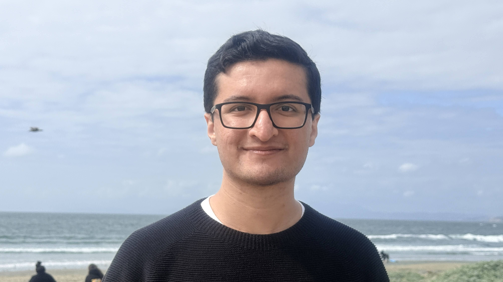

Aryaman Arora

I am a third-year Ph.D. student at Stanford University advised by Dan Jurafsky and Christopher Potts, and funded by the NSF Graduate Research Fellowship Program. Concurrently, I am a researcher at Transluce.
I work on interpretability of language models. I believe understanding how language models work is the scientific problem of our age.
I completed my B.S. in Computer Science and Linguistics at Georgetown University, where I worked with Nathan Schneider on computational linguistics. I interned at ETH Zürich with Ryan Cotterell working on information theory, as well as at Apple and Redwood Research. I really like languages.
Contact
Google Scholar · GitHub · Twitter · Email
Greatest Hits [» more papers]
Language model circuits are sparse in the neuron basis
Mechanistic evaluation of Transformers and state space models
AxBench: Steering LLMs? Even simple baselines outperform sparse autoencoders
ReFT: Representation finetuning for language models
CausalGym: Benchmarking causal interpretability methods on linguistic tasks